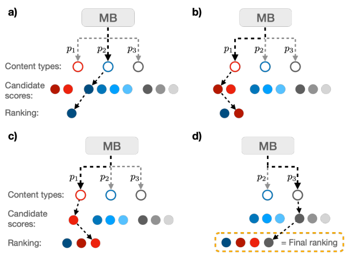
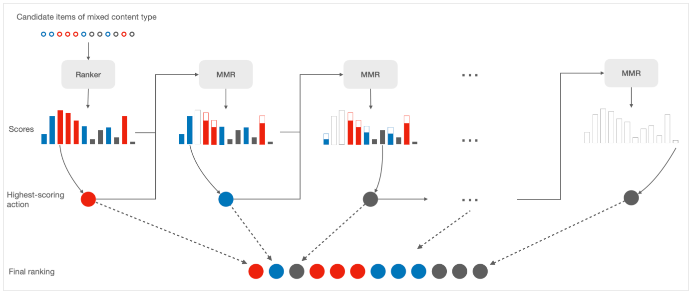

Ranking Across Different Content Types: The Robust Beauty of Multinomial Blending (跨内容类型排序：多项式混合的稳健之美)
- 会议/期刊: RecSys 2024 (18th ACM Conference on Recommender Systems, Bari, Italy；Applied/Industry Track，5 页短文)
- 作者与机构: Jan Malte Lichtenberg, Giuseppe Di Benedetto (Amazon Music)；Matteo Ruffini (Albatross AI，工作完成于 Amazon Music)
- 推荐链路定位: 重排（post-ranking / slate 组装），下游接在精排打分器 \(h\) 之后
- 研究方向: 多任务学习与列表级重排 / 去偏公平与工业架构
- 论文原文: https://arxiv.org/abs/2408.09168v1
- 开源代码: 暂未开源
TL;DR (1分钟核心速览)
多内容类型（音乐 / 播客 / 商品 / 视频）混排时，用点击类短期奖励直接训练的 LTR 排序器会系统性压制"慢内容类型"，而改损失函数、奖励塑形或人工置顶等方案存在曝光不可控、超参不可解释、重训即漂移三大痛点。本文提出多项式混合 MB：先对全候选打分一次，再按业务给定概率 \(\boldsymbol{p}\)逐位采样内容类型并取该类最高分候选，使期望曝光份额严格等于\(p_c\)。Amazon Music 线上 A/B 中播客收听时长 +18.82%、整体互动 +2.23%（帕累托改进），且仅需单一配置即可跨市场复用，最终全量上线。
Background & Motivation (背景与核心矛盾)
- 主流范式: 工业首页普遍走"多路召回（每类内容各一路）+ 单塔 LTR 精排（如 Deep PropDCG）+ 重排"链路，跨类型差异全靠打分器隐式吸收。
- 前人局限: 其一，慢内容（播客单集长、复听率低）平均互动远低于音乐，短期点击目标下曝光被持续挤压，形成"曝光少→数据更少→打分更低"的恶性循环，长期用户满意度与创作者生态受损。其二，现有纠偏手段均不满足工业要求：改损失加多样性正则（SGL/MMR 类思想）无曝光保证且多样性超参难解释、重训须重调；奖励塑形需先估计跨类型奖励相对权重，其对实际曝光的影响几乎不可预测；人工置顶则完全不个性化，还会污染反事实 OPE 的倾向性估计。
- 核心洞察 (Key Insight): 曝光分配本质上是一个可控的随机化预算问题，而非排序模型的学习问题——只要把"类型选择"从打分函数中剥离出来做显式采样，曝光份额就与打分器解耦，天然具备可解释性与重训稳定性。
- 本文切入点: 用一次多项式采样 + 类内保序的极简算子替代一切"间接控制曝光"的复杂机制。
Method (核心方法设计)
1. 整体框架 (Overall Architecture)
输入为 \(n\)个候选\(d_j\)及其特征\(\boldsymbol{x}_j\)（每项只属于单一类型\(c(d_j)\in\{1,\dots,C\}\)）与目标列表长度\(k\)。模型先用既有打分器\(h:\mathbb{R}^p\to\mathbb{R}\)只打分一次，随后在每个类型内部按分数降序排成\(C\)个队列；接着进入\(k\)步循环：每步按概率\(\boldsymbol{p}\)采样一个类型，弹出该类型队首（即剩余最高分项）填入列表；若某类型队列耗尽则对其余类型概率重新归一化。打分器可随时重训、行为可随环境漂移，而曝光预算\(\boldsymbol{p}\) 保持不变——这正是它在工业上"稳健"的来源。
flowchart TD
A["候选集 d_j 与特征 x_j"] --> B["打分器 h 一次性打分"]
B --> C["按内容类型分桶并类内降序排序"]
C --> D["采样 c ~ Multinomial(p)"]
D --> E["取该类队首最高分项填入列表"]
E --> F{"列表已满 k?"}
F -->|否| G["该类型池空则重归一化 p"] --> D
F -->|是| H["输出混排列表"]
2. 关键设计拆解 (Key Designs)
- 多项式混合算子（MB）：解决"曝光预算不可控"。第 \(t\)步执行\(c_t \sim \mathrm{Multinomial}(\boldsymbol{p}^{(t)})\)，再取\(d_t=\arg\max_{d\in \mathcal{C}_{c_t}} h(\boldsymbol{x}_d)\)，其中\(\mathcal{C}_{c}\)为类型\(c\)的剩余候选集；空池时\(p_c^{(t)}=p_c/\sum_{c'\in\mathcal{A}_t}p_{c'}\)（\(\mathcal{A}_t\)为仍有候选的类型集合）。因此\(\mathbb{E}[\text{share}_c]\approx p_c\)，即"\(p_c\)就是类型\(c\)在列表中的期望占比"，业务方可用一个百分比参数直接下达曝光 KPI，无需反推损失权重。类内仍按\(h\) 排序，故个性化信息零损失。
- 对比基线 MMR 的失效机理：MMR 类重排按 \(d_{t}=\arg\max_{d}\big[\lambda h(\boldsymbol{x}_d)-(1-\lambda)\max_{d'\in S_t}\mathrm{sim}(c(d),c(d'))\big]\)逐位贪心，需要每步重算全部剩余候选分数；且\(\lambda\) 与目标曝光的映射依赖当前分数分布，故换市场、换模型版本（分布漂移）就必须重调，甚至需反事实数据做 OPE 寻参。图 2 的示意正说明其"相似度惩罚"是隐式的，无法给出曝光承诺。
- 训练目标与推理开销：本文无新损失、无负采样、无训练阶段改动——MB 是纯推理期插件，等价于对类型标签做一次随机化的分层采样。复杂度为 \(O(n\log n)\)的一次排序加\(O(k)\)采样，远低于 MMR 的\(O(kn)\) 逐步重算；且因采样分布显式已知，倾向性矩阵可闭式写出，天然适配逆倾向加权式离线 OPE，不引入人工置顶造成的倾向偏差。

Experimental Setup & Evaluation Protocol (实验设置与评估协议)
- 数据集与预处理: 本文为工业应用短文，不含公开数据集与离线统计，评估完全依赖 Amazon Music 首页真实流量的线上 A/B。候选为音乐容器与播客容器两类（\(C=2\)），列表长度\(k\) 未披露。
| 数据集 | #Users | #Items | #Interactions | 稀疏度/密度 | 特征/场景说明 |
|---|---|---|---|---|---|
| Amazon Music 线上 A/B | 未披露（按用户随机分流） | 全站音乐+播客容器 | 未披露 | 未披露 | 首页混排；控制组含人工播客置顶规则 |
| 公开离线基准 | — | — | — | — | 无（作者明确不在静态学术数据上评测） |
- 数据划分与防穿越 (Splitting Strategy): 非离线划分，而是线上随机分流 A/B（control / MMR / MB 三组并行），指标窗口期未披露；无监督信号泄漏风险，但存在实验期内用户学习效应与季节性混淆的可能。
- 排名评测协议 (Ranking Protocol): 不使用 NDCG/Recall@k 等离线全库排序指标，直接采用线上业务指标：播客收听时长（慢类型培育）与整体互动（平台健康度）双目标，要求形成帕累托改进；无采样排序、无负采样设置。
- 对比基线与超参设置: 基线为控制组（生产 Deep PropDCG + 人工播客置顶），对照为同一打分器分别叠加 MMR 与 MB。MB 的 \(\boldsymbol{p}\)由业务定义且跨市场统一单一取值（数值未披露）；MMR 的\(\lambda\) 需逐市场离线调优以匹配同一播客曝光目标。
Key Experimental Results (实验关键数据)
1. 主实验对比 (Main Results)
| 方法（同一 Deep PropDCG 打分器） | 播客收听时长 Lift | 整体互动 Lift | 参数配置 | 是否帕累托改进 |
|---|---|---|---|---|
| Control（人工置顶规则） | 0.00% | 0.00% | 逐位置人工维护 | — |
| MMR 多样性重排 | +13.57% | +2.76% | 每市场需独立 \(\lambda\)，随模型重启漂移 | 是 |
| MB 多项式混合 | +18.82% | +2.23% | 全市场共享单一 \(\boldsymbol{p}\) | 是 |
| Improv. (MB vs MMR) | +5.25pp | −0.53pp | — | — |
2. 消融实验 (Ablation Study)
论文未设模块级消融，以下为其"机制替换/运维维度"的对照结论整理：
| 移除或替换的组件 | 播客曝光可控性 | 重训后稳定性 | 计算开销 | 结果 |
|---|---|---|---|---|
| w/o 显式采样（改损失/奖励塑形） | 无保证 | 需重调多样性超参 | 训练期成本高 | 未在本文实测，定性否定 |
| w/o MB（人工置顶，即 Control） | 位置级、非个性化 | 依赖人工生命周期管理 | 低但人力重 | 基准，两组均优于它 |
| MB → MMR | 隐式、需 OPE 寻参 | 分数分布漂移即失效 | \(O(kn)\) 逐步重算 | 时长 Lift 低 5.25pp |
| MB 去掉重归一化（空池即停） | 列表长度不可保证 | — | 略降 | 附录以"下界曝光"启发式替代等量保证 |
3. 关键实验发现 (Key Findings)
- 显式采样优于隐式惩罚：在完全相同的打分器下，MB 的播客时长提升 +18.82% 高于 MMR 的 +13.57%（相对高出约 39%），说明直接控制曝光份额比"相似度惩罚调参"更能把预算真正兑现到用户面前。
- 用户级保证带来增量获客：MB 在"首次播客播放用户数"类拉新指标上显著优于 MMR，原因是 MMR 因惩罚机制对不感兴趣用户几乎不推播客，而 MB 在用户粒度上强制兑现 \(p_c\) 曝光——这解释了为何时长增益更大而整体互动仅让利 0.53pp。
- 运维稳定性可量化变现：MMR 需按市场分别调 \(\lambda\)、且模型重启引起分数分布变化即改变多样性行为；MB 仅一个\(\boldsymbol{p}\) 全市场复用，是其在两者线上均为帕累托改进的前提下仍被选为全量上线方案的决定性因素。
Highlights & Limitations (亮点、对比与审稿批判)
- 与代表作对比 (vs. Prior Work): 相比多样性损失类工作（如 Cofirank/DPP 系）与 MMR 重排，本文不追求"个性化多样性"而是主动牺牲它，换取 (i) 与打分器解耦的曝光保证、(ii) 业务可读的百分比参数、(iii) 重训零重调；相比奖励塑形，它把不可观测的权重估计问题转化为可观测的份额分配问题。
- 可迁移亮点: ①"类型采样 + 类内保序"可直接迁移到多业务场景混排（如电商首页多品类、信息流多形态素材），一个 \(p_c\) 即一条业务 KPI；②因采样分布显式，倾向性矩阵有闭式解，可直接接入 OPE 做离线评估，避免人工干预引发的倾向偏差。
- 审稿级局限批判: ①评估强度偏弱：无离线基准、无数据集统计、无显著性检验与置信区间，只有一组三臂 A/B 且未披露实验时长与样本量，+2.23% vs +2.76% 的差异是否显著无法判断；②完全放弃类型级个性化，固定 \(p_c\) 对"只想听音乐"的重度用户是体验损失，长期留存/LTV 影响未评估，且曝光与点击的反馈回路可能带来新的流行度偏置。
Rating (四维评分)
- 方法创新性 (Novelty): ⭐⭐ （算子极简近乎"分层随机采样"，理论贡献有限，胜在把工业痛点抽象成曝光预算问题）
- 评估协议与实验扎实度 (Protocol & Experiments): ⭐⭐ （仅有单组线上 A/B 三项指标，无离线基准、无消融、无显著性检验，且超参与样本量多处未披露）
- 写作与数学规范度 (Clarity & Rigor): ⭐⭐⭐⭐ （符号干净、算法伪码化清晰，图 1/图 2 的对比图示把 MB 与 MMR 的机理差异讲得非常直观）
- 工业落地与复现价值 (Industrial & Practical Value): ⭐⭐⭐⭐⭐ （零训练改动、\(O(k)\) 推理、单一参数跨市场复用，已全量上线并经 A/B 验证，工程性价比极高，虽无开源代码但实现门槛极低）